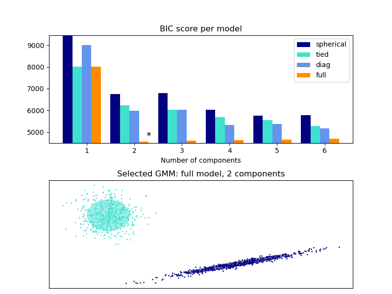

Note
Click here to download the full example code or to run this example in your browser via Binder
Gaussian Mixture Model Selection¶
This example shows that model selection can be performed with Gaussian Mixture Models using information-theoretic criteria (BIC). Model selection concerns both the covariance type and the number of components in the model. In that case, AIC also provides the right result (not shown to save time), but BIC is better suited if the problem is to identify the right model. Unlike Bayesian procedures, such inferences are prior-free.
In that case, the model with 2 components and full covariance (which corresponds to the true generative model) is selected.
import numpy as np
import itertools
from scipy import linalg
import matplotlib.pyplot as plt
import matplotlib as mpl
from sklearn import mixture
# Number of samples per component
n_samples = 500
# Generate random sample, two components
np.random.seed(0)
C = np.array([[0.0, -0.1], [1.7, 0.4]])
X = np.r_[
np.dot(np.random.randn(n_samples, 2), C),
0.7 * np.random.randn(n_samples, 2) + np.array([-6, 3]),
]
lowest_bic = np.infty
bic = []
n_components_range = range(1, 7)
cv_types = ["spherical", "tied", "diag", "full"]
for cv_type in cv_types:
for n_components in n_components_range:
# Fit a Gaussian mixture with EM
gmm = mixture.GaussianMixture(
n_components=n_components, covariance_type=cv_type
)
gmm.fit(X)
bic.append(gmm.bic(X))
if bic[-1] < lowest_bic:
lowest_bic = bic[-1]
best_gmm = gmm
bic = np.array(bic)
color_iter = itertools.cycle(["navy", "turquoise", "cornflowerblue", "darkorange"])
clf = best_gmm
bars = []
# Plot the BIC scores
plt.figure(figsize=(8, 6))
spl = plt.subplot(2, 1, 1)
for i, (cv_type, color) in enumerate(zip(cv_types, color_iter)):
xpos = np.array(n_components_range) + 0.2 * (i - 2)
bars.append(
plt.bar(
xpos,
bic[i * len(n_components_range) : (i + 1) * len(n_components_range)],
width=0.2,
color=color,
)
)
plt.xticks(n_components_range)
plt.ylim([bic.min() * 1.01 - 0.01 * bic.max(), bic.max()])
plt.title("BIC score per model")
xpos = (
np.mod(bic.argmin(), len(n_components_range))
+ 0.65
+ 0.2 * np.floor(bic.argmin() / len(n_components_range))
)
plt.text(xpos, bic.min() * 0.97 + 0.03 * bic.max(), "*", fontsize=14)
spl.set_xlabel("Number of components")
spl.legend([b[0] for b in bars], cv_types)
# Plot the winner
splot = plt.subplot(2, 1, 2)
Y_ = clf.predict(X)
for i, (mean, cov, color) in enumerate(zip(clf.means_, clf.covariances_, color_iter)):
v, w = linalg.eigh(cov)
if not np.any(Y_ == i):
continue
plt.scatter(X[Y_ == i, 0], X[Y_ == i, 1], 0.8, color=color)
# Plot an ellipse to show the Gaussian component
angle = np.arctan2(w[0][1], w[0][0])
angle = 180.0 * angle / np.pi # convert to degrees
v = 2.0 * np.sqrt(2.0) * np.sqrt(v)
ell = mpl.patches.Ellipse(mean, v[0], v[1], 180.0 + angle, color=color)
ell.set_clip_box(splot.bbox)
ell.set_alpha(0.5)
splot.add_artist(ell)
plt.xticks(())
plt.yticks(())
plt.title(
f"Selected GMM: {best_gmm.covariance_type} model, "
f"{best_gmm.n_components} components"
)
plt.subplots_adjust(hspace=0.35, bottom=0.02)
plt.show()
Total running time of the script: ( 0 minutes 0.226 seconds)